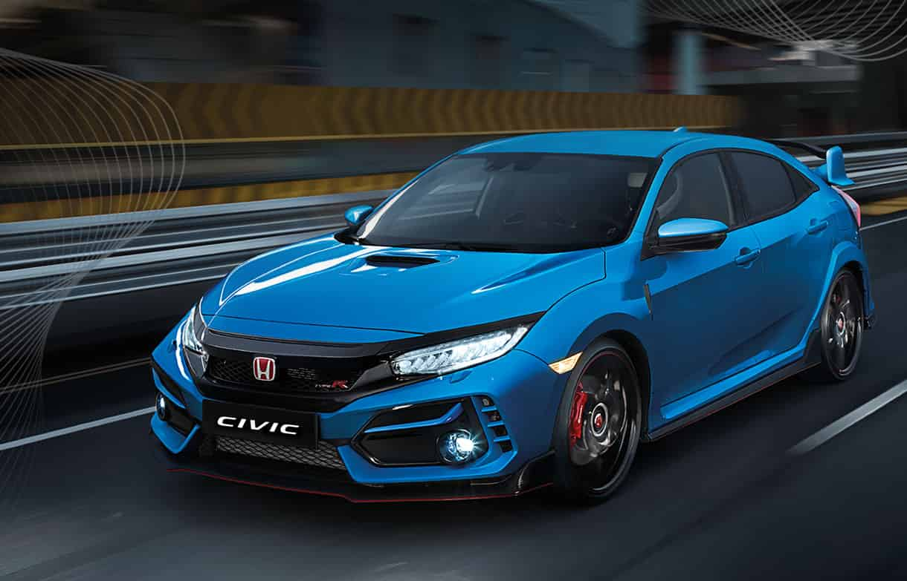
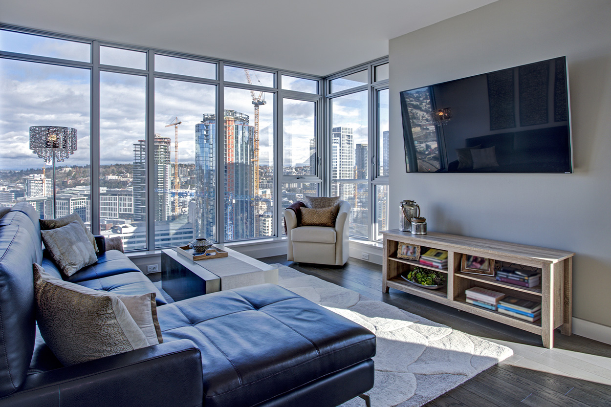

My Future
After graduating in college, I plan to become an IT professional in an international bank company with a good benefits. I will look for an international bank company and plan to pass the interview and exams. When I become an IT professional, I will really work hard and give my very best efforts in every assigned task. I will also do my very best to make sure that I will work in that international bank company until I retire especially as much as possible. Becoming an IT professional is so amazing especially we live in a world full of modern machines, gadgets or computers and it continues to progress every day which is the reason IT professionals are becoming more popular. People nowadays appreciate IT professionals because most of the transactions are now online that creates so many jobs in the future. I will save money while I am working as an IT professional so that when I retire in the future, I will think of a better plan and try to enjoy my life as much as possible.

After a few years in working as an IT professional, I will buy my own brand new car because I really wanted to have a sports or racing car. Having my own car is my dream or long term goal and it is very worth it to buy a car for myself as a reward for all my hardwork. I consider buying a car is like a tropy or rewards for all the effort I gave for many years. I will save money in buying a brand new car and I want to feel that you bought something for yourself that you really want by your own money because of all the hardwork that you did. It is very convenient when you have your own car because you can go to far places and roadtrips. Roadtrips is also the reason why I want to have a car because I love to drive on a long roads with music and it makes me feel very peaceful that is very relaxing. So when I become a successsful IT professional, I will really save money in buying a brand new car in the future especially I want to live my life to the fullest.

In my future, I plan to become an independent person as much as possible and every independent person needs their own place to live. For me, living in the condominium is one of my goals in the future. When I become a successful IT professional in the future, I will have my own car and place but not just in any place. I love to live in a place that is very high and has a nice city lights view that I can stare at the window for many minutes. Also, I would love to design my own unit in a condominium and invite my family and friends to come over. When you have the condominium unit to yourself, you can now do anything you want to do and you will enjoy the peace and quiet time that will make you feel very comfortable especially if you need an alone time. There are also basketball courts, swimming pools, and convenience stores in the condominium which I find very useful in terms of my personal needs. This involves having to feel relaxed.

When I retire from being an IT professional in the future, I will put up my own restaurant business using all the money I saved from years of working. I know having your own restaurant is very stressful if you do not manage it properly but I will surely manage my restaurant properly and assign my family members in managing the restaurant because I really trust them especially this restaurant is for us family. I plan to put up my own restaurant because after I retired from work I will still have a purpose and not be bored in life. Too much vacation can sometimes bored me and miss doing the works. So by having my own restaurant, I control my schedule easily and take a vacation or work anytime I want. I can also leave my own legacy for the next future generations of my family. I can use all my experiences and what I have learned in managing my own restaurant business and I hope my business will be popular to my clients or customers in the future.